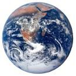
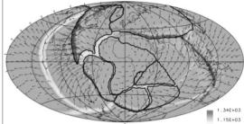
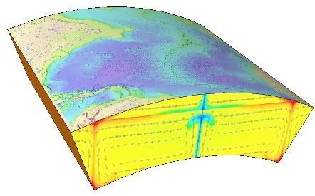
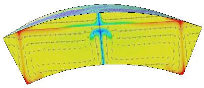
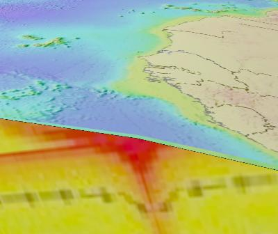
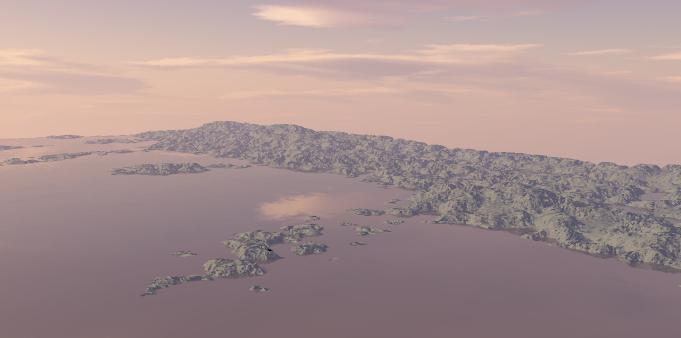
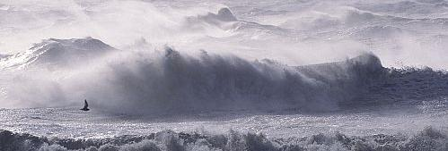

(The assumption is that CPT is the ONLY SUBJECT of this video, so we are explaining CPT and showing it's explanatory power as a flood mechanism model)
Start with full earth view and camera flying in closer. A classic "blue marble" earth image, except blanketed by heavy cloud representing flood condition.
Suddenly remove the clouds making it clear that they are removed for explanatory purposes.

Map modified to show a half Pangaea/half modern continental arrangement, more greenery etc.

Do the veritable old "fly-in-from-outer-space" trick, then suddenly slice the earth to show "cross-sectional" explanation, (while still flying in)... Images are animated on the 3D faces.

Camera turns to face the cross-section illustrating animation of "runaway subduction". (Baum's animated gif needs to be modified to show displacement rather than velocity vectors, but temperature plot might be OK. Drop the viscosity plot altogether.

Now fly camera towards earth surface towards coastal zone.

Keep approaching closer to get dramatic flyover of coast during inundation. Talk about sea level rise caused by ocean basin buoyancy etc. The closer the better, flying along coast as water rises. We are inundating here so there should be forest. Forest destruction and high speed incoming current flow directed up river valleys and foam wake trailing off islands would be nice.

The Ark is sitting safely on the highest elevation land at this point in time. (Might be possible to fly over it also, if we can arrange it not to be too far inland)
(no image)
"CPT causes linear geyser, generates rain..." Now mention the clouds that should be there and suddenly turn the clouds back on. Then fly up through clouds into space showing total cloud blanket, then turn towards geyser jets which penetrate the cloud blanket and travel towards them. Talk about supersonic jets and heat loss etc.
(No image)
As approaching the geyser wall, dive back into clouds (fogged out again ) then fly very low altitude (just above dynamic waves) assuming clouds are missing here, to show geyser wall and associated clouds & wind. No crisp, clean waves here, just one mess of a storm that would mush the Ark instantly. Low visibility might help get the CG happening.
